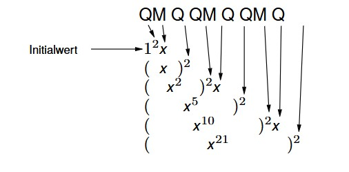
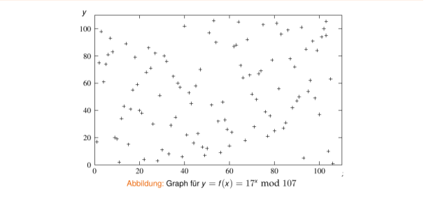
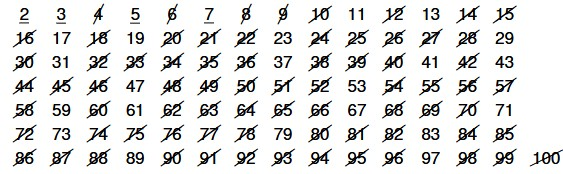
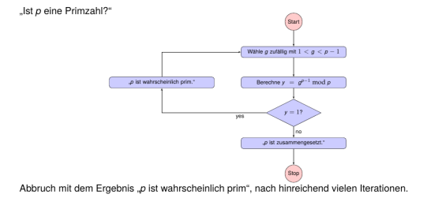
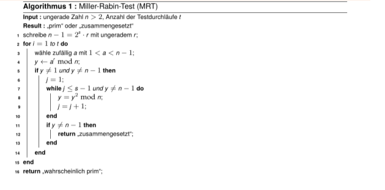
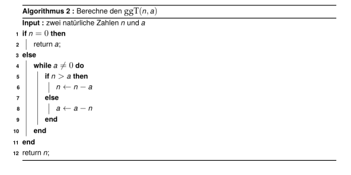
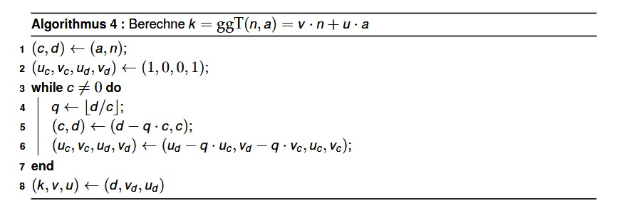
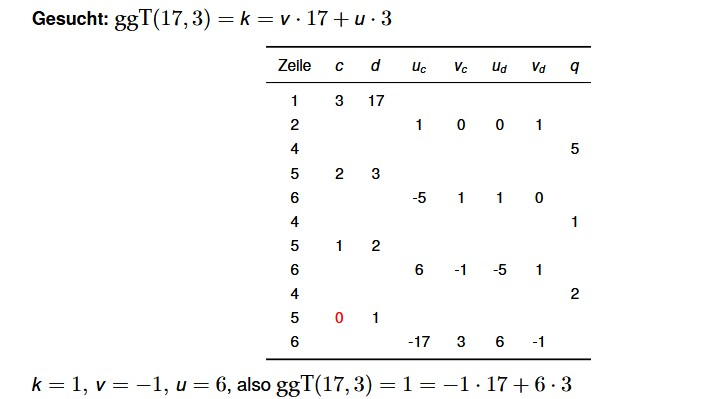

Zahlentheorie

Prof. Dr. Lukas Iffländer
HTW Dresden
03.08.2026
Agenda
- 01Motivation
- 02Restklassen und modulo
- 03Modulare Exponentiation
- 04Diskreter Logarithmus
- 05Primzahlen und Primzahltests
- 06ggT, Euler und Inverse
Warum Zahlentheorie?
- Zahlentheorie bildet die mathematische Grundlage moderner Kryptografie
- Asymmetrische Verfahren (RSA, Diffie-Hellman) basieren auf:
- Rechnen mit Restklassen (modulare Arithmetik)
- Eigenschaften von Primzahlen
- Einwegfunktionen (leicht zu berechnen, schwer umzukehren)
- Zentrale Frage: Welche Operationen sind effizient durchführbar, welche sind praktisch unmöglich?
Rechnen mit Restklassen
- Beispiel: Rudi ist um 7:00 Uhr aufgestanden und seit 34 Stunden wach. Wie spät ist es?
\[ (7 + 34) \bmod 24 = 41 \bmod 24 = 17 \bmod 24 \]
Es ist offensichtlich 17:00 Uhr.
- Man spricht: “41 und 17 sind äquivalent modulo 24” und notiert
\[ 41 \equiv 17 \pmod{24}. \]
Rechnen mit Restklassen
Allgemein gilt
\[ a \equiv b \pmod n \Longleftrightarrow \exists k \in \mathbb{Z}: a = b + kn \]
wenn \(a > 0\) und \(0 \le b < n\), dann ist \(b\) der Rest bei Division von \(a\) durch \(n\).
\(a \bmod n\) wird häufig modulare Reduktion (von \(a\)) genannt.
Rechenregeln
\[ (a + b) \bmod n = ((a \bmod n) + (b \bmod n)) \bmod n \]
\[ (a - b) \bmod n = ((a \bmod n) - (b \bmod n)) \bmod n \]
\[ (a \cdot b) \bmod n = ((a \bmod n) \cdot (b \bmod n)) \bmod n \]
\[ (a \cdot (b + c)) \bmod n = ((a \cdot b \bmod n) + (a \cdot c \bmod n)) \bmod n \]
- häufig in der Kryptografie eingesetzt, da bestimmte Berechnungen modulo \(n\) schwierig1 sind.
- Zwischenergebnisse haben beschränkten Wertebereich.
Modulare Exponentiation
Eine wichtige Operation, z. B. für RSA, ist
\[ a^x \bmod n \]
Berechnung am Beispiel \(y = 3^8 \bmod 7\):
- naiver Ansatz
\[ y = (3 \cdot 3 \cdot 3 \cdot 3 \cdot 3 \cdot 3 \cdot 3 \cdot 3) \bmod 7 = 6561 \bmod 7 = 2 \]
-> Zwischenergebnis sehr groß (6561), schlecht zu speichern
- Kombination von Potenzierung und modularer Reduktion
\[ y = ((3^2 \bmod 7)^2 \bmod 7)^2 \bmod 7 = ((9 \bmod 7)^2 \bmod 7)^2 \bmod 7 = 2 \]
-> Zwischenergebnisse bleiben klein (\(\le 49\)), nur 3 Multiplikationen
Schön und gut - was aber, wenn \(x\) keine Zweierpotenz ist?
Modulare Exponentiation
Binäre Exponentiation (“Square-and-Multiply”) von \(x^e\)
Idee: Binärdarstellung des Exponenten \(e\) drückt diesen als Summe von Zweierpotenzen aus!
Algorithmus zur Berechnung von \(y = x^e\):
- \(e\) als Binärzahl darstellen
- Binärdarstellung von \(e\) bitweise von links beginnend lesen:
- wenn Bit = 1, dann “QM” notieren
- wenn Bit = 0, dann “Q” notieren
- Initialwert: \(y = 1\)
- wiederum von links beginnend generierte Zeichenkette analysieren:
- wenn Zeichen = “Q”, dann \(y\) quadrieren
- wenn Zeichen = “M”, dann \(y\) mit \(x\) multiplizieren
Modulare Exponentiation
Binäre Exponentiation - Beispiel
Berechnung von \(x^{42}\)
Es gilt:
\[ 42_{10} = 101010_2 \]
d.h.
\[ 42 = 2^5 + 2^3 + 2^1 \]
\[ 42 = 1\ 0\ 1\ 0\ 1\ 0 \]

d.h.,
\[ x^{42} = ((((x^2)^2 \cdot x)^2)^2 \cdot x)^2 \]
Modulare Exponentiation
Binäre Exponentiation – Beispiel
Berechnung von \(x^{42}\)
Es gilt:
\[42_{10} = 101010_2\]
d.h.
\[42 = 2^5 + 2^3 + 2^1 = 1\ 0\ 1\ 0\ 1\ 0\]
\[x^{42} = ((((x^2)^2 \cdot x)^2)^2 \cdot x)^2\]
Modulare Exponentiation
Kombination mit Modulo-Operation: Berechnung von \(y = x^e \bmod p\)
da gilt:
\[ (a \cdot b) \bmod n = ((a \bmod n) \cdot (b \bmod n)) \bmod n, \]
muss Modulo-Operation nach jeder Multiplikation und nach jeder Quadrierung ausgeführt werden
Beispiel: Berechnung von \(x^{25} \bmod p\)
Es gilt:
\[ 25_{10} = 11001_2,\ \text{d. h. } QM\ QM\ Q\ Q\ QM \]
\[ x^{25} \bmod p = (((((((x^2 \bmod p) \cdot x) \bmod p)^2 \bmod p)^2 \bmod p)^2 \bmod p) \cdot x) \bmod p \]
- benötigt 6 Multiplikationen und 6 Modulo-Operationen
Diskreter Logarithmus
Def. Eine primitive Wurzel modulo \(p\) ist eine Zahl \(a\), deren Potenzen modulo \(p\) alle Werte zwischen 1 und \(p - 1\) generieren kann.
Beispiel: 5 ist eine primitive Wurzel modulo 7:
\[ 5^1 = 5 \pmod 7 \]
\[ 5^2 \equiv 5 \cdot 5 \equiv 4 \pmod 7 \]
\[ 5^3 \equiv 4 \cdot 5 \equiv 6 \pmod 7 \]
\[ 5^4 \equiv 6 \cdot 5 \equiv 2 \pmod 7 \]
\[ 5^5 \equiv 2 \cdot 5 \equiv 3 \pmod 7 \]
\[ 5^6 \equiv 3 \cdot 5 \equiv 1 \pmod 7 \]
Das bedeutet: Für jedes \(y < p\) können wir das \(x\) ermitteln, welches die Gleichung
\[ f(x) = y = a^x \bmod p \]
erfüllt. Wir nennen \(x\) den diskreten Logarithmus modulo \(p\) von \(y\).
Grafische Darstellung

Diskreter Logarithmus
Schlussfolgerung:
- Vorwärtsrichtung: Modulare Exponentiation \(f(x) = a^x \bmod p\) ist leicht zu berechnen (polynomial, mittels Square-and-Multiply).
- Rückwärtsrichtung: Umkehrung der modularen Exponentiation (“diskreter Logarithmus”) ist sehr schwierig.
- Für große Primzahlen \(p\) (z. B. 2048 Bit) existiert kein effizienter Algorithmus
- Bester bekannter Ansatz benötigt exponentiell viele Schritte
- Einwegfunktion - Basis für Diffie-Hellman und ElGamal
Primzahlen
Def. Eine natürliche Zahl \(p > 1\) ist eine Primzahl, wenn sie genau zwei positive Teiler hat: 1 und sich selbst.
- 0 und 1 sind keine Primzahlen (per Definition).
- Beispiele: 2, 3, 5, 7, 11, …, 73, …, \(2^{82.589.933} - 1\) (gegenwärtig größte bekannte)1.
- Primzahlen mit Abstand 2 sind so genannte Primzahlzwillinge2; z. B. (3,5), (101, 103), \((3756801695685 \cdot 2^{666669} \pm 1)\).
- Hat \(p\) mehr als 2 Teiler, so ist sie eine zusammengesetzte Zahl (ein Produkt von Primzahlen).
- Kein Verfahren, keine Funktion, keine Formel usw. bekannt, um effizient (große) Zahlen in Primfaktoren zu zerlegen.
Primzahlen
Unendlichkeit von Primzahlen
Satz: Es gibt unendlich viele Primzahlen.
Beweis (Euklid, ca. 300 v. u. Z.):
Angenommen, es gäbe nur endlich viele Primzahlen \(p_1, p_2, \ldots, p_n\).
Betrachte die Zahl \(m = p_1 \cdot p_2 \cdot \ldots \cdot p_n + 1\).
Falls \(m\) zusammengesetzt ist, muss sie einen Primfaktor \(q\) enthalten mit \(q \mid m = p_1 \cdot p_2 \cdot \ldots \cdot p_n + 1\).
Da \(q\) in \(\{p_1, p_2, \ldots, p_n\}\) enthalten sein muss (denn das sind alle Primzahlen, die es gibt), muss auch gelten
\[ q \mid p_1 \cdot p_2 \cdot \ldots \cdot p_n = m - 1. \]
Aus \(q \mid m\) und \(q \mid (m - 1)\) folgt \(q \mid m - (m - 1)\), also \(q \mid 1\).
Da aber keine Primzahl 1 teilt, haben wir einen Widerspruch. Die Annahme endlich vieler Primzahlen ist somit falsch.
Generierung von Primzahlen
Übersicht über Verfahren
- Probedivision
- Sieb des Eratosthenes
- Fermatscher Primzahltest
- Miller-Rabin-Test (1974)
- Solovay-Strassen-Test (1977)
- Sieb von Atkin (1999)
- AKS-Primzahltest (2002; polynomielle Laufzeit) [1]
Generierung von Primzahlen
Sieb des Eratosthenes (Eratosthenes von Kyrene, ca. 276-196 v. u. Z.)
Algorithmus
- Man schreibe alle Zahlen von 2 bis zum gewünschten Maximum M auf.
- Es sei n die kleinste nicht gestrichene und nicht markierte Zahl. Man markiere n und streiche dann alle Vielfache von n aus.
- Man führe Schritt 2 für alle n ≤ √M aus.
- Alle markierten und alle nicht gestrichenen Zahlen sind Primzahlen.
Beispiel (M=100):

Primzahltest nach Fermat
Kleiner Satz des Fermat
Satz 1.1 (Kleiner Satz des Fermat)
Voraussetzung: \(p\) sei prim, \(g \in \mathbb{Z}\), \(ggT(g, p) = 1\).
Dann gilt:
\[ g^{p-1} \equiv 1 \pmod p. \]
Umkehrung
Umkehrung des Satzes: Wenn gilt:
\[ g^{p-1} \not\equiv 1 \pmod p, \]
dann kann \(p\) keine Primzahl sein, sondern muss zusammengesetzt sein.
-> Grundidee für einen (probabilistischen) Primzahltest.
Primzahltest nach Fermat

Primzahltest nach Fermat
Fermatsche Pseudoprimzahlen, Carmichael-Zahlen
Problem
Es gibt einige (wenige) Zahlen \(p\), für die \(g^{p-1} \equiv 1 \pmod p\) gilt und die dennoch zusammengesetzt sind, die so genannten fermatschen Pseudoprimzahlen zur Basis \(g\).
Abhilfe: Nutzung einer anderen Basis \(g\)
Problem 2
Es gibt (sehr, sehr wenige) Zahlen \(p\), für die \(g^{p-1} \equiv 1 \pmod p\ \forall\ 1 < g < p - 1\) gilt und die dennoch zusammengesetzt sind, die so genannten Carmichael-Zahlen.
Abhilfe: keine bzw. Nutzung eines anderen Primzahltests.
Beispiel
\(561 = 3 \cdot 11 \cdot 17\) ist die kleinste Carmichael-Zahl.
Miller-Rabin-Test (MRT)

Miller-Rabin-Test (MRT)
Beispiel: Test von \(n = 91\) mit \(t = 3\) Durchläufen
- \(n = 91, t = 3\)
- \(91 - 1 = 2^1 \cdot 45 \qquad r = 45, s = 1\)
- \(a = 12,\ y = 12^{45} \bmod 91 = 90 \qquad\) “prim”
- \(a = 17,\ y = 17^{45} \bmod 91 = 90 \qquad\) “prim”
- \(a = 34,\ y = 34^{45} \bmod 91 = 34 \qquad\) “zusammengesetzt!”
\(a = 12\) und \(a = 17\) werden “Lügner” (liars) bzgl. der Eigenschaft “prim” genannt. (Tatsächlich: \(91 = 7 \cdot 13\))
Eulersche \(\phi\)-Funktion
Definition 1.1 (Eulersche \(\phi\)-Funktion)
\(\phi(n)\) ist die Anzahl der zu \(n\) teilerfremden positiven ganzen Zahlen, die nicht größer sind als \(n\).
\[ \phi(n) = \left|\{1 \le a \le n \mid ggT(n, a) = 1\}\right| \]
\(\phi(n)\) ist die Mächtigkeit der Menge, die alle Zahlen \(a\) enthält, die teilerfremd zu \(n\) sind.
- zahlentheoretische Funktion
- Beispiele:
- \(\phi(1) = 1\)
- \(\phi(2) = 1\)
- \(\phi(6) = 2 \qquad (a \in \{1, 5\})\)
- \(\phi(7) = 6 \qquad\) (Primzahl!)
- \(\phi(15) = 8 \qquad (a \in \{1, 2, 4, 7, 8, 11, 13, 14\})\)
Eulersche \(\phi\)-Funktion und Primzahlen
- Wenn \(p\) prim, dann \(\phi(p) = p - 1\).
- Wenn \(p\) und \(q\) prim, dann \(\phi(p \cdot q) = (p - 1)(q - 1)\).
- wichtig für RSA!
Beweis:
- Es gibt genau \(p \cdot q - 1\) Zahlen, die kleiner als \(p \cdot q\) sind.
- Unter diesen gibt es \((p - 1)\) Vielfache von \(q\) und \((q - 1)\) Vielfache von \(p\).
- Alle anderen Zahlen \(< p \cdot q\) sind keine Teiler von \(p \cdot q\), da \(p\) und \(q\) prim sind.
- Folglich gilt:
\[ \phi(p \cdot q) = (p \cdot q - 1) - (p - 1) - (q - 1) \]
\[ = p \cdot q - p - q + 1 \]
\[ = (p - 1)(q - 1). \]
Der Satz von Euler
Definition 1.2 (Satz von Euler)
Es seien \(m, n\) zwei teilerfremde natürliche Zahlen. Dann gilt:
\[ m^{\phi(n)} \bmod n = 1. \]
Für Primzahlen \(p, q\) mit \(p \ne q\) und \(n = p \cdot q\) gilt damit (vgl. vorherige Folie)
\[ m^{(p-1)(q-1)} \bmod (p \cdot q) = 1. \]
Größter gemeinsamer Teiler (ggT)
Berechnung über Primfaktorzerlegung
Idee:
- Zerlegung beider Operanden in Primfaktoren
- Produkt der gemeinsamen Faktoren ist der ggT.
Beispiel: \(ggT(468, 1260)\)
Zerlegung in Primfaktoren liefert:
\[ 468 = 2 \cdot 2 \cdot 3 \cdot 3 \cdot 13 \]
\[ 1260 = 2 \cdot 2 \cdot 3 \cdot 3 \cdot 5 \cdot 7 \]
\[ ggT = 2 \cdot 2 \cdot 3 \cdot 3 = 36 \]
- nur für kleine Zahlen praktikabel, da Primfaktorzerlegung algorithmisch aufwändig für große Zahlen
Größter gemeinsamer Teiler (ggT)
Euklidischer Algorithmus (ca. 500 v. u. Z.)

Größter gemeinsamer Teiler (ggT)
Euklidischer Algorithmus (ca. 500 v. u. Z.)
- sukzessive Subtraktion kann effizient auf modulo-Operation abgebildet werden:
\[ ggT(n, a) = \begin{cases} ggT(a, (n \bmod a)) & \text{für } a > 0 \\ n & \text{für } a = 0 \end{cases} \]
- mit \(n > a \ge 0\)
Euklidischer Algorithmus
Beispiel
\[ ggT(792, 75) = ggT(75, 42) \qquad (792 = 10 \cdot 75 + 42) \]
\[ = ggT(42, 33) \qquad (75 = 1 \cdot 42 + 33) \]
\[ = ggT(33, 9) \qquad (42 = 1 \cdot 33 + 9) \]
\[ = ggT(9, 6) \qquad (33 = 3 \cdot 9 + 6) \]
\[ = ggT(6, 3) \qquad (9 = 1 \cdot 6 + 3) \]
\[ = ggT(3, 0) \qquad (6 = 2 \cdot 3 + 0) \]
\[ = 3 \]
Fazit:
- effizienter Algorithmus (viel effizienter als Primfaktorzerlegung!).
Erweiterter Euklidischer Algorithmus
generiert zusätzlich zum ggT eine so genannte Linearkombination (aka Vielfachsumme) des ggT: \[ggT(n, a) = k = v · n + u · a\]

Erweiterter Euklidischer Algorithmus
Beispiel

Modulare Inverse
Satz 1.2 (Satz von der modularen Inversen)
Seien \(a\) und \(n\) teilerfremde ganze Zahlen (d. h., \(ggT(n, a) = 1\)). Dann gibt es eine Ganzzahl \(b\), so dass gilt:
\[ a \cdot b \bmod n = 1. \]
(“a ist modulo \(n\) invertierbar.”, “\(b\) ist das zu \(a\) inverse multiplikative Element modulo \(n\).”)
Beweis:
- wenn \(k = 1\), dann gibt es lt. erweitertem euklidischen Algorithmus ganze Zahlen \(v, u\) mit
\[ 1 = k = ggT(n, a) = v \cdot n + u \cdot a. \]
Bei (Modulo-)Division durch \(n\) liefert linke Seite den Wert 1, rechte Seite den Wert \(u \cdot a \bmod n\) (da \(v \cdot n\) durch \(n\) teilbar).
Also gilt:
\[ 1 = u \cdot a \bmod n \]
- Mit \(u = b\) folgt die Behauptung.
Literaturverzeichnis I
[1] Manindra Agrawal, Neeraj Kayal und Nitin Saxena. PRIMES Is in P on JSTOR. [Online; accessed 8. Apr. 2024]. Sep. 2004. url: https://www.jstor.org/stable/3597229.
Vielen Dank!
Prof. Dr. Lukas Iffländer
HTW Dresden
03.08.2026

03.08.2026 / Zahlentheorie / HTW Dresden / Prof. Dr. Lukas Iffländer